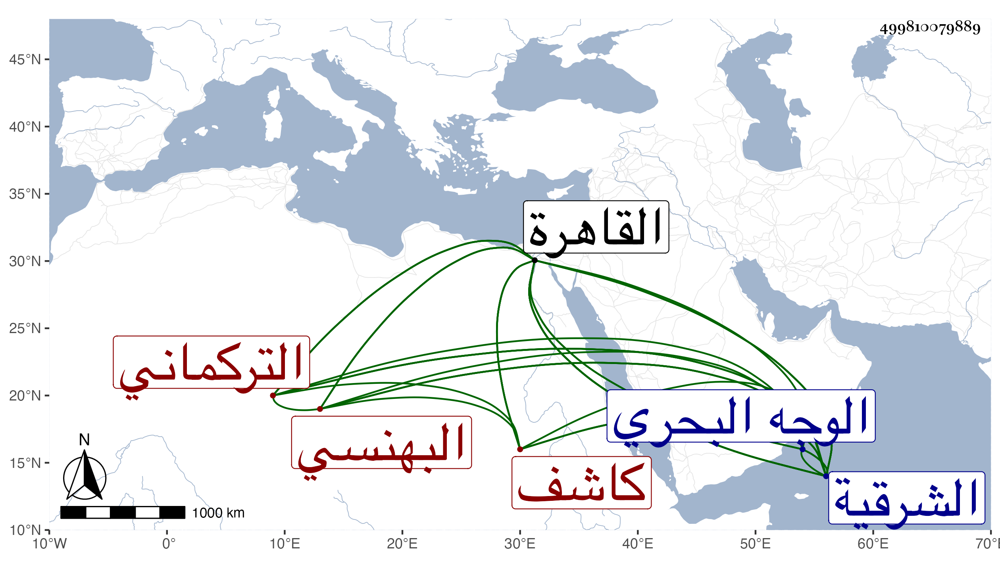

0902Sakhawi.DawLamic.ITO20230111-ara1.EIS1600.499810079889
Biography ID: 499810079889
279
عبد الله البهنسي التركماني كاشف الشرقية وأحد الظلمة أصله من فقراء تركمان البهنسة وقدم القاهرة فقيرا مملقا وخدم في جهات عديدة بقرى القاهرة مشدا على البلاد إلى أن اتصل بخدمة الظاهر جقمق قبل سلطنته فلما تسلطن قربه ثم ولاه كشف الشرقية الوجه البحري من أعمال القاهرة فما عف ولا كف بل ساءت سيرته جدا وصادره غير مرة وأخذ من أمواله الخبيثة جملة ولما مات صودر أيضا مع استقرار الأشرف به أيضا في الشرقية لكنه باشر بذل وهوان وآل أمره إلى أن صرف . ومات في ربيع الآخر سنة أربع وستين وقد شاخ غير مأسوف عليه ، وكان أكولا جدا .
